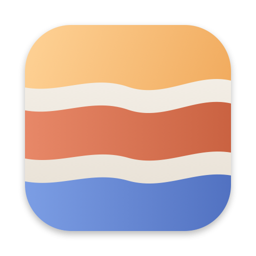

StrataBar: a macOS menu bar app for Strata
An Ollama-style menu bar app and GUI for Strata, which runs the Qwen3.8-Flash-Next model locally on an Apple Silicon Mac. Start, pause and stop the Strata server, and chat with it in a native window, without keeping a terminal open.
What it does
- Start Service / Stop Service run the Strata server as a launchd job, so quitting StrataBar or closing a terminal leaves the model as it is.
- Pause / Resume unload and load the model through the server's
POST /unloadandPOST /load: the memory is freed while paused, and the HTTP server stays up. - Open Chat Window shows Strata's own web app in a native window, with the API key taken from the run config. Image uploads, downloads and links work.
- Open API Monitor shows the last 100 requests that apps sent to the server, with their prompts and answers.
- Copy API URL copies
http://127.0.0.1:<port>/v1for other apps, and Show Log opens the server's log in Console. - Set Up Strata checks the Mac (chip, macOS, Command Line Tools, memory, disk) and installs Strata's latest release when there is none.
- The menu bar icon shows the state: loaded, paused, starting or stopped.
StrataBar or the Strata app?
Strata has its own app (Option A in
Strata's README), with the engine inside. StrataBar is for Strata installed in a folder with its
./setup.sh, as StrataBar's own Set Up Strata does: it runs that install's server from the menu bar,
as a launchd job, and opens its web app and API monitor in native windows.
What you need
- An Apple Silicon Mac with macOS 15 or newer.
- Strata, installed with its
./setup.shin~/Strata(another folder can be chosen in the menu). Without it, StrataBar offers to set it up.
Build from source
git clone https://github.com/fengzhyuan/Strata-UI.git
cd Strata-UI
./build.sh # builds /Applications/StrataBar.app
open /Applications/StrataBar.appIt needs the Command Line Tools (xcode-select --install) for swiftc. More in the
README.